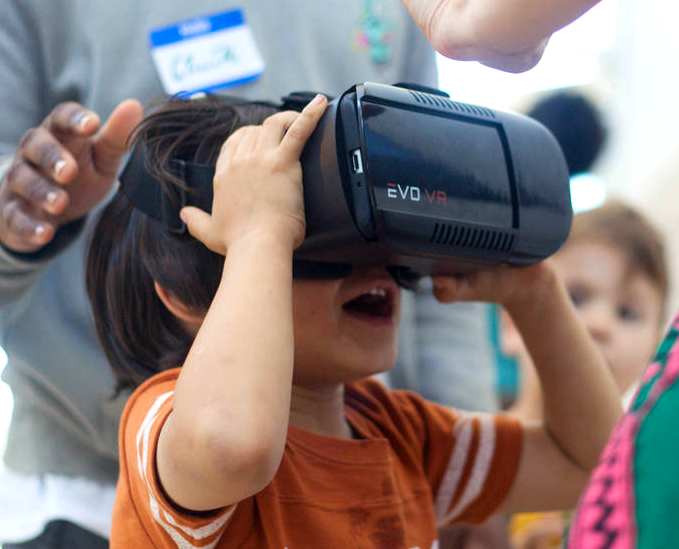
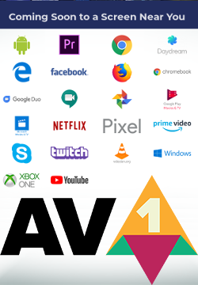
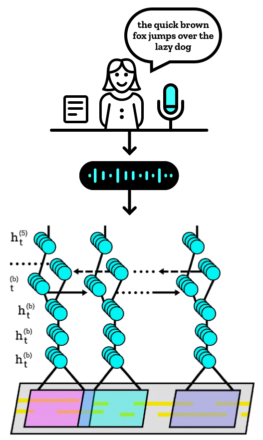

Inhalt
Mozilla Emerging Technologies
The following slides are available in this presentation:
Mozilla Emerging Technologies
New Technologies for the Open Web
Robert Kaiser,
"KaiRo" <kairo@kairo.at>
Mozilla Tech Speaker
Mozilla Tech Speaker
Slides: https://slides.kairo.at/linuxwochen2018/
- Created for a presentation at Linuxwochen 2018 in Wien/Vienna.
- Written in HTML 5 with CSS 3 and JavaScript.
- Navigation via links on all slides, via access keys (e.g. "n"/Alt+Shift+N for "next") or back/forward arrow keys
- Contents
- 04/2018 Robert Kaiser - "Mozilla", "Firefox" and their logos are trademarks of Mozilla Foundation.
Emerging Technologies Group
- R&D organization @ Mozilla, a.k.a. Mozilla Research
- research.mozilla.org
- mozilla.org/technology
- Multiple teams for different technologies
Mixed Reality (XR)

- WebXR - Virtual & Augmented Reality (WebVR & AR)
- research.mozilla.org/mixed-reality
- webvr.info - WebVR API, Open Standard
- In concert with WebGL, WebAudio and Gamepad APIs
- Windows: Firefox release, Mac: Nightly, Linux: in development
A-Frame - XR Made Simple
 Example:
Example:
<a-scene>
<a-sphere position="0 1.25 -1" radius="1.25" color="#EF2D5E"></a-sphere>
<a-cube position="-1 0.5 1" rotation="0 0 0" width="1" height="1" depth="1" color="#4CC3D9">
<a-animation attribute="rotation" repeat="indefinite" to="0 360 0"></a-animation>
</a-cube>
<a-cylinder position="1 0.75 1" radius="0.5" height="1.5" color="#FFC65D"></a-cylinder>
<a-plane rotation="-90 0 0" width="4" height="4" color="#7BC8A4"></a-plane>
<a-sky color="#ECECEC"></a-sky>
</a-scene>
Open Media Codecs - Daala & AV1

- Opus: royalty-free, open, universal audio codec
- Next target: do the same with video
- Mozilla/Xiph: Daala + Google: VP9 + Cisco: Thor
- Alliance for Open Media (AOMedia) for collaboration
- AV1 bitstream frozen since April 2018
- Next: De-/Encoding perf, hardware support, ...
Speech & Machine Learning

- Common Voice: Open repository for voice recordings
- Machine learning to train speech-to-text (STT) systems
- DeepSpeech / Pipsqueak: Mozilla STT, open source
- Offline speech recognition engine, for security + privacy, can run on RPi3
- Only 6.5% error rate on first released model
- research.mozilla.org/machine-learning
Programmiersprache - Rust
Web-Engine - Servo
WebAssembly
IoT - Things Gateway
Fragen?